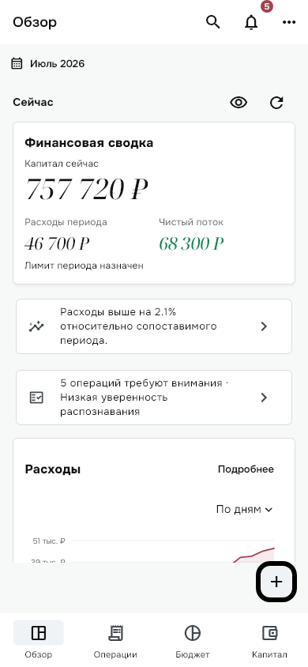
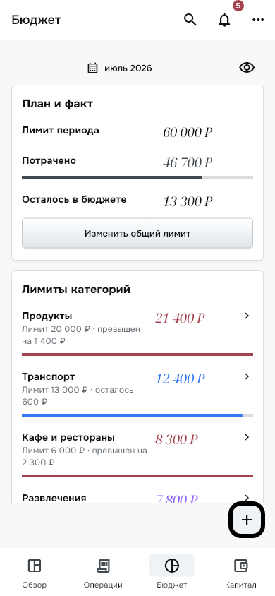
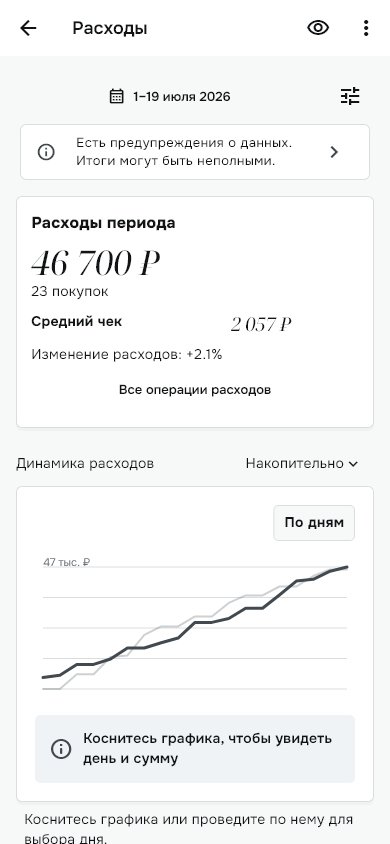
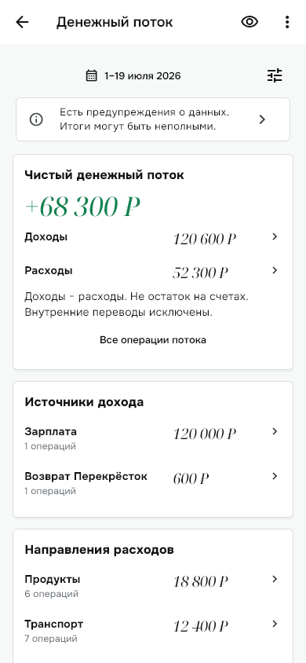
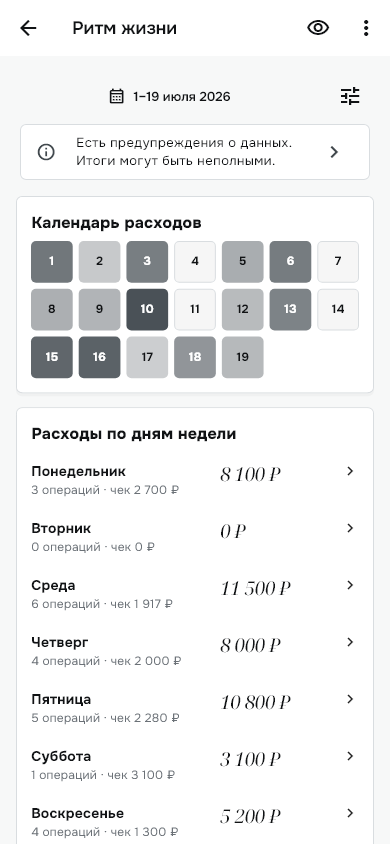
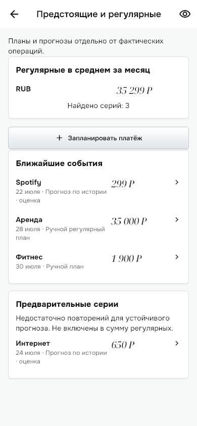
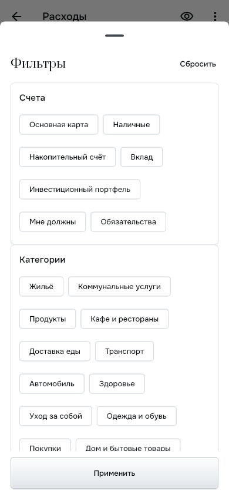
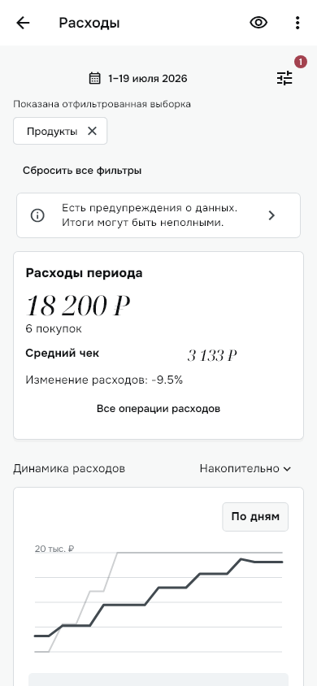
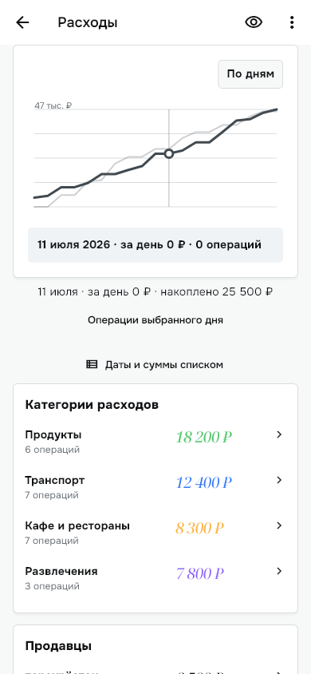

Qesto Mobile · Stage 4
Qesto Mobile — Stage 4
Рендеры реальных Flutter-экранов на синтетическом профиле. Новые «Обзор» и «Бюджет», отдельные аналитические маршруты, фильтры и touch-график. Личные банковские данные не использованы. Физическая Android QA пока не выполнена.

1 · Обзор

2 · Бюджет

3 · Аналитика расходов

4 · Денежный поток

5 · Ритм жизни

6 · Предстоящие и регулярные

7a · FilterSheet

7b · Активные фильтры

8 · Touch-состояние графика